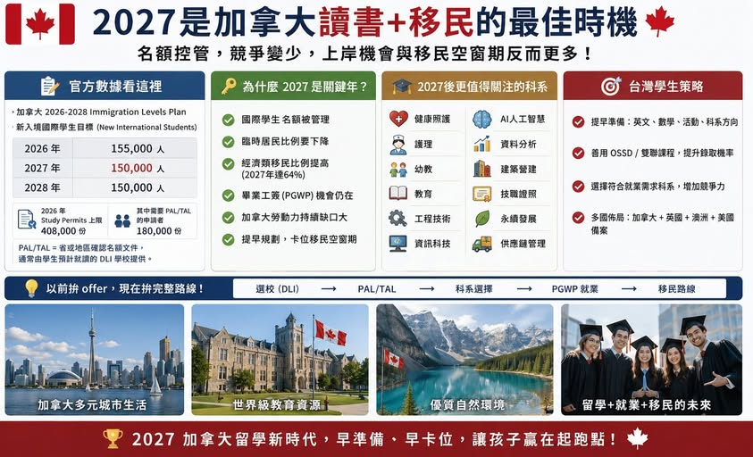

《看懂制度，選對世界》第一集
2027 是加拿大讀書加移民的好時機嗎？
】 加拿大官方宣布 : 2026–2028 Immigration Levels Plan 已把國際學生列入臨時居民管理；

】 加拿大官方宣布 : 2026–2028 Immigration Levels Plan 已把國際學生列入臨時居民管理；官方頁面列出 2026 年新入境國際學生目標為 155,000 人，2027、2028 年皆為 150,000 人。IRCC 另指出 2026 年最多核發 408,000 份 study permits，其中 180,000 份分配給需要 PAL/TAL 的申請者；PAL/TAL 是省或地區確認名額的文件，通常由學生預計就讀的 DLI 學校提供。
很多家長最近看到加拿大國際學生名額變少，第一個反應是： 「加拿大是不是越來越難去了？」 我的看法剛好相反。. 數字背後，是機會重新洗牌 很多人看到名額下降，只想到「門檻變高」，這其實代表市場正在整理。以前加拿大留學市場太熱，申請人數多、學校招生多、競爭也亂。現在加拿大開始篩選學生，反而給有準備的家庭更多上岸機會。
加拿大同時出現三個訊號： 1 國際學生名額被管理 2 臨時居民比例要下降 3 經濟類移民比例提高 換句話說，加拿大想要的學生，已經越來越明顯： 有學術準備 有英文能力 選對科系 能畢業就業 能補上加拿大勞動力缺口 未來有機會銜接移民路線 這對台灣學生來說，其實是好消息。因為台灣學生普遍學習能力強，家庭重視教育，若 . 哪些科系在 2027 之後更值得關注？如果目標是加拿大讀書＋就業＋移民，我會建議家長特別留意這些方向： 這些領域和加拿大人口老化、基礎建設、科技轉型、教育需求、醫療人力缺口高度相關。
選科系時，別只看名字好聽。要看孩子的能力、加拿大的人才需求、畢業工簽、工作市場與移民路線。. 為什麼 與 對台灣學生來說，OSSD 或台加雙聯路線最大的價值，是提前把加拿大高中學術能力準備好。學生可以在台灣完成： Grade 12 英文 、Grade 12 數學 、 G12對應錄取科系需求的專業科目 英文寫作訓練 活動履歷 Peter 教授推薦信 國際交流經驗 大學申請素材 當加拿大名額進入控管時，準備完整的學生會更有優勢。因為未來加拿大要的，會是能讀、能畢業、能工作、能留下貢獻的人。
. Peter 給家長的一句話 2027 加拿大政策變化，表面上是名額下降。但對有準備的家庭來說，這可能是一次很好的窗口期。競爭者變少，制度變嚴，市場變成熟。越早準備英文、成績、科系、活動履歷與升學路線，越有機會在新制度中卡到位置。所以，2027 不是加拿大留學退場。2027 是加拿大留學進入篩選時代。誰先理解規則，誰就更有機會上岸。